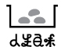

找出家中冰箱
即期的食材
交給我們
(伸手)
統一煮成料理
分享
活動內容
募集食材
買後吃不完銷不掉
忘記自己在減肥
的
生鮮蔬果
、
乾貨
、
調味料
及
五穀雜糧
(一把菠菜、半條蘿蔔等等，完整度不限)
請以未發出異味&保存期限為7/5之後
第一階段
米的目擊 6/21-6/30
第二階段
菜的目擊 7/01-7/03
開煮&發送
7/05(日)
也很需要
一個大鍋子 一個寄放食物的中途冰箱
烹飪高王 任何熱心人士
欲知詳情
臉書搜尋 人生百味
0963-367692 阿德
welcome@doyouaflavor.tw
